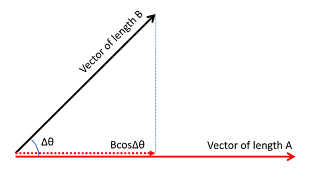
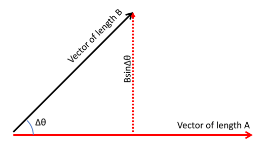
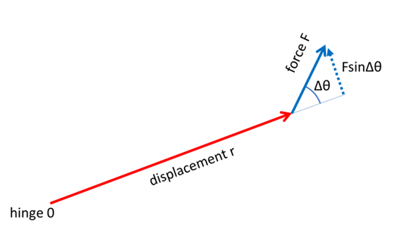
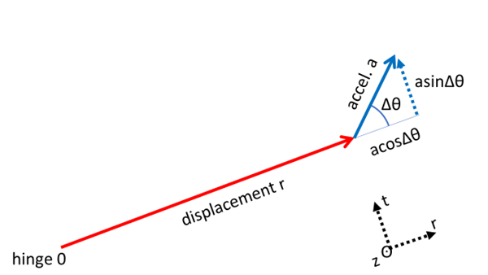

Torque and angular acceleration
1. Derivation of Relationship Between Torque and Angular Acceleration.
Torque is known as the capacity to rotate an object. In this exercise, we will see how a specific definition for torque is useful for determining how quickly an object’s rotation increases.
-
Because pushing an object perpendicular to the direction it is hinged generates the most rotation for the force, torque is defined using an operation called the cross product. Unlike the dot product, which multiplies one vector by the parallel component of a second vector, the cross product multiplies one vector by the perpendicular component of a second vector. So, instead of the \(\cos (\Delta \theta )\) used in the dot product, the cross product contains \(\fillinmath{X} ( \Delta \theta )\text{:}\)

Figure 20.2.1. The diagram shows two vectors that share the same starting point. One vector extends horizontally to the right in red and is labeled as having length \(A\text{.}\) The second vector extends upward and to the right at an angle and is labeled as having length \(B\text{.}\) The angle between the two vectors is marked \(\Delta \theta\) in blue near their shared origin. A horizontal dashed line represents the projection of the black vector on the red vector, marking the horizontal component of the black vector. This horizontal segment is labeled \(B \cos \Delta \theta\text{.}\) The magnitude of dot product of \(\vec{A}\) and \(\vec{B}\) is given by multiplying \(\vec{A}\) by the parallel component of \(\vec{B}\text{:}\)\begin{equation*} |\vec{A}|(|\vec{B}|\cos{(\Delta\theta)}) \end{equation*}
Figure 20.2.2. The diagram shows two vectors that share the same starting point. One vector extends horizontally to the right in red and is labeled as having length \(A\text{.}\) The second vector extends upward and to the right at an angle and is labeled as having length \(B\text{.}\) The angle between the two vectors is marked \(\Delta \theta\) in blue near their shared origin. A vertical red dotted line drops from the tip of the angled vector down to the horizontal vector. This vertical segment is labeled \(B \sin \Delta \theta\) and represents the perpendicular distance between the two vector endpoints. The magnitude of cross product of \(\vec{A}\) and \(\vec{B}\) is given by multiplying \(\vec{A}\) by the perpendicular component of \(\vec{B}\text{:}\)\begin{equation*} |A|(|B| \fillinmath{X} (\Delta \theta)) \end{equation*} -
Since the torque depends on how much force you apply to an object (force = \(\vec{F}\)), and also how far away from the hinge you push the object (displacement from hinge 0 to push location = \(\vec{r}\)), torque (\(\vec{\tau}\)) is defined as the cross product of vector \(\vec{r}\) and vector \(\vec{F}\text{:}\)

Figure 20.2.3. The diagram presents a hinge labeled “0” at the left, from which a red displacement vector labeled “displacement r” extends up and to the right. At the end of this displacement vector, a blue force vector labeled “force F” is drawn at an upward angle compared to the displacement vector. The angle between the displacement vector and the force vector is marked as \(\Delta \theta\text{.}\) A dotted blue line drops perpendicularly from the force vector to the line the displacement vector is pointing, representing the perpendicular component of the force. This perpendicular component is labeled “ \(F \sin \Delta \theta\)”. The layout visually demonstrates how torque depends on the magnitude of the applied force, the displacement from the hinge, and the sine of the angle between the force and displacement vectors. \begin{gather*} \vec{\tau} = \vec{r} \times \vec{F} \\ \left| \, \vec{\tau} \, \right| = \left| \, \vec{r} \times \vec{F} \, \right| =r F \sin{\Delta\theta} \end{gather*}If the force is spinning the object counterclockwise around the hinge, we call this a positive torque (because the rule “lefty-loosey” implies this would cause a screw to travel out of the page). However, if the force is spinning the object \(\fillinmath{XXXX}\) around the hinge, that would be a negative torque (because the rule “righty-tighty” implies this would cause a screw to burrow down into the page). -
\begin{equation*} \left| \vec{\tau} \right| = r(\fillinmath{X} a)\sin{\Delta\theta} \end{equation*}Group the acceleration with the \(\sin{\Delta\theta}\text{:}\)\begin{equation*} \left| \vec{\tau} \right| = r \fillinmath{X} (a\sin{\Delta\theta}) \end{equation*}
-
What does the \((a\sin{\Delta\theta})\) mean? We can figure out which acceleration component that corresponds to. We’ll draw the r,t,z axes for circular motion and look at which axis the \((a\sin{\Delta\theta})\) is going along:

Figure 20.2.4. The diagram presents a hinge at the origin with a red displacement vector labeled \(r\) extending outward from the hinge. At the tip of this displacement vector, a blue acceleration vector labeled \(a\) extends at an angle \(\Delta \theta\) relative to the displacement direction. The acceleration vector is decomposed into two components: one aligned with the displacement vector, labeled a \(\cos \Delta \theta\text{,}\) and one perpendicular to it, labeled a \(\sin \Delta \theta\text{.}\) A small coordinate triad appears in the lower right corner, showing three axes labeled r, t, and z, indicating radial, tangential, and vertical directions. The component of the acceleration vector labeled \(\sin \Delta \theta\) points along the tangential direction. So, is \((a\sin{\Delta\theta})\) the radial component, \(a_r\text{,}\) or the tangential component, \(a_t\text{,}\) of the acceleration? \(\fillinmath{XXXX}\) -
\begin{equation*} \left| \vec{\tau} \right| = rm \fillinmath{X} \end{equation*}
-
But we know from rotational kinematics that tangential acceleration \(a_t\) is related to angular acceleration \(\alpha\) and the radius \(r\) of the circle by:\begin{equation*} a_{t} = r \fillinmath{X} \end{equation*}
-
Subbing in for \(a_t\text{,}\) we now see torque is related to the angular acceleration \(\alpha\text{:}\)\begin{equation*} \left| \vec{\tau} \right| = rm(r \fillinmath{X} ) \end{equation*}
-
Grouping the r’s together,\begin{equation*} \left| \vec{\tau} \right| = mr^{2} \alpha \end{equation*}
-
The quantity \(mr^{2}\) is defined as the moment of intertia \(I\) of a point sized mass \(m\text{:}\) So, subbing out \(mr^{2} = I\text{,}\) we get:\begin{equation*} \left| \vec{\tau} \right| = \fillinmath{X} \alpha \end{equation*}This looks very similar to Newton’s Second Law \(\left| \, \vec{F} \, \right| = m \left| \, \vec{a} \, \right|\text{,}\) except this tells you the angular acceleration instead of the rectangular acceleration. \(\vec{\tau}\) plays the role of \(\vec{F}\text{,}\) \(I\) plays the role of \(m\) , and \(\alpha\) plays the role of \(\left| \, \vec{a} \, \right|\text{.}\)In practice, you will have more than one force acting on your object, so you get a net torque (sum of the positive/counterclockwise and negative/clockwise torques) causing the total counterclockwise/clockwise angular acceleration:\begin{equation*} \left| \vec{\tau}_{net} \right| = \left| {\vec{\tau}}_{1} + {\vec{\tau}}_{2} + {\vec{\tau}}_{3} + \ldots \right|= I\alpha \end{equation*}If the net torque has a \(\fillinmath{X}\) sign, the angular acceleration is counterclockwise. If the net torque has a \(\fillinmath{X}\) sign, the angular acceleration is clockwise.
2.
You push on the doorknob of a door, which is located at a distance of 0.500 meters from the hinge. Your push has a magnitude of 40.0 Newtons, directed perpendicular to the door’s surface. However, door’s hinge exerts a torque of -15.0 newton meters (i.e., opposite to the direction of your torque).
-
What is the net torque on the door due to you plus the hinge?
-
Suppose the moment of inertia of the door is 40.0 kilogram meters per second squared. What is the angular acceleration of the door?
-
If the door starts at rest, what will be the tangential velocity of the doorknob at 0.250 seconds after you started pushing?